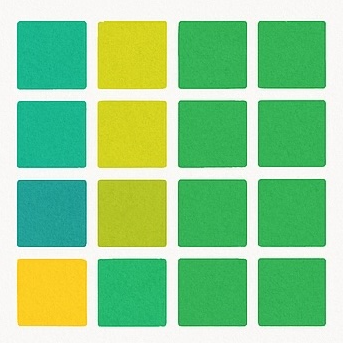
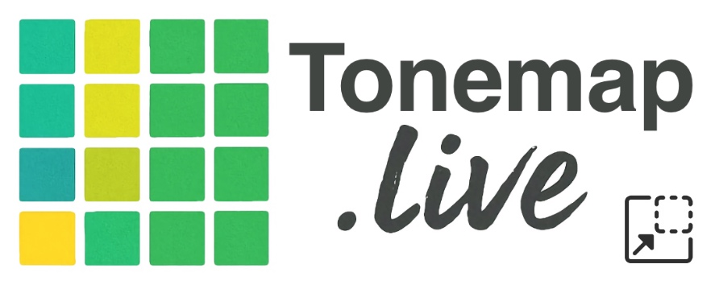

Core Tuning
Advanced
Changes the app interface theme. Intonation colors are controlled separately.
Start your 7-day free trial, then $9.99/year (~83¢/month). Cancel anytime.
Your subscription supports ongoing development of Tonemap.